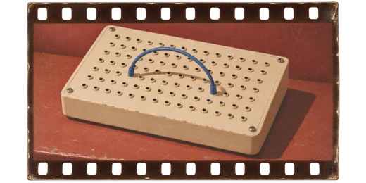

A step closer to RSI? Not really.

Cosa ci dice il modo in cui Astra ha corretto i pesi di Qwen sulla capacità dei modelli di fare il lavoro di chi ne studia il funzionamento?

Essays and research notes on AI,
technology, and everything in between.

Cosa ci dice il modo in cui Astra ha corretto i pesi di Qwen sulla capacità dei modelli di fare il lavoro di chi ne studia il funzionamento?